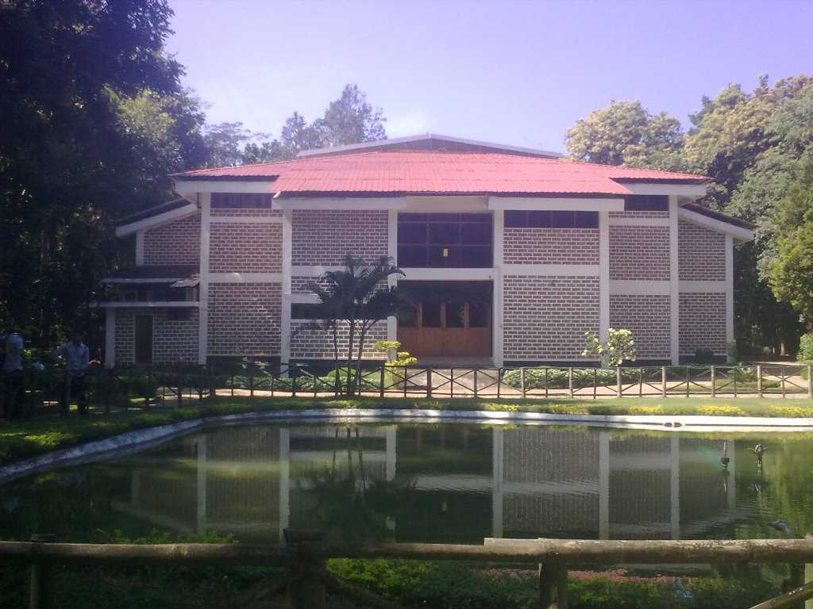

Malappuram is bounded by the Nilgiris hills on the East and the Arabian Sea on the west. District of Malappuram is literally the land atop the hills, is remarkable for its unique natural beauty. Perched among the undulating hills and the meandering rivers that flow to reach the coconut-fringed seacoast, the land conceals a unique and eventful history. Home to the khilafath movement and the mappila revolts, which questioned the British authority in India, Malappuram was the military headquarters of the Zamorins of Kozhikode since ancient times. The hill country also contributed much to the cultural artistic traditions of the state. The mosques and temples of the land are known for their spectacular festivals. The land of great poets and writers, political and religious leaders, the district has carved a unique place of its own in the history of Kerala.
Nilambur
Nilambur is famous for its teak plantation. The oldest teak plantation of the world is in the Conollys plot is just 2 Kms, from Nilambur town.

Teak Museum
In the Teak Museum, a visitor can have at hand, information on all aspects of teak. The museum, arranged in a two storied building, exhibits articles and details of historic, aesthetic and scientific value.
Pazhayangadi Mosque
The three day long Valia Nercha feat at this 500 year old Muslim pilgrim centre, celebrated in February/March, is a local cultural event.
Malappuram has still the ruins of an ancient fort built by Tippu Sultan. The district has a rich cultural and political heritage. Malappuram is known for national movements such as Khilafat Movement and Moplah Rebellion, in which the Muslim Mappilas and peasants struggled against feudalism and colonialism alike. Though there were occasional religious overtones associated with such movements, many historians acknowledge them as part of Indian Independence Struggle. Malappuram was the headquarters of British troops[citation needed] and later it became the headquarters of the Malabar Special Police.MSP was created by the British in the aftermath of the widespread violence and bloodshed witnessed during the protests by the local Muslims (Mappilas/Moplahs) against the British decision abolishing the Islamic Caliphate in Turkey.